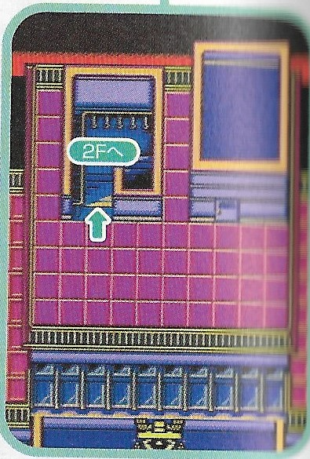
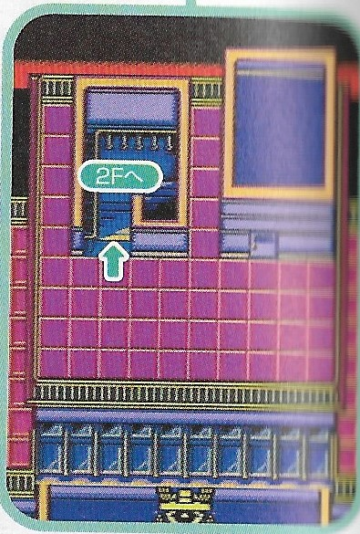
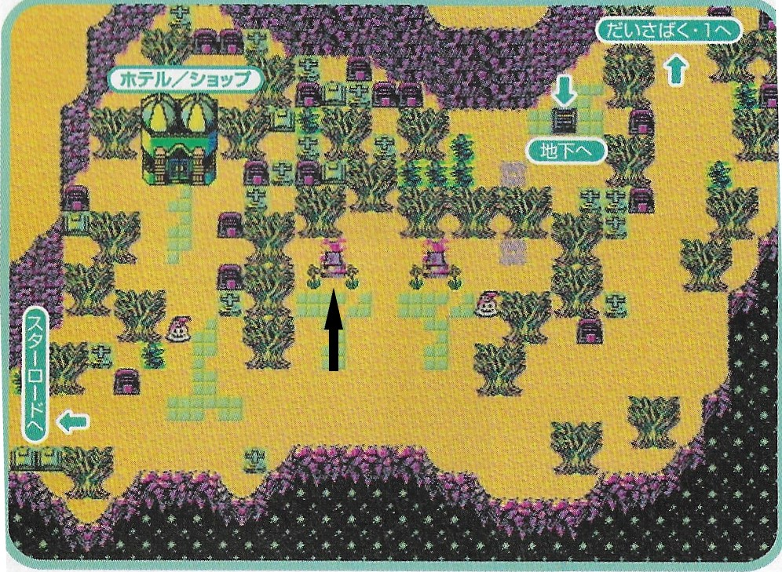
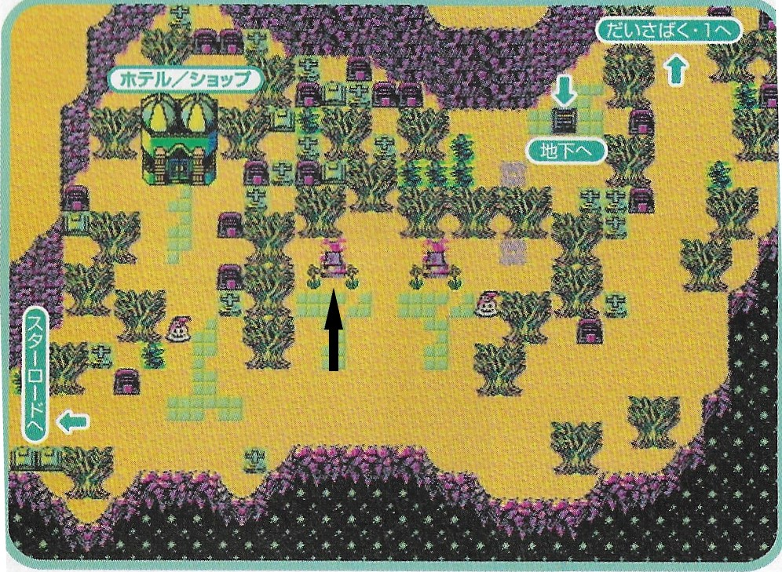

| Black Book | Red Book |
You can hold L to mash through all the text. Options are 早い、オフ、オフ. When outside, press R to ride Veil, which is the fastest method of transportation.
School
 

As soon as you can access the it, change settings (fast text, animations off, voice acting off). Go up the stairs. Choose the second option when talking to Veil, your partner, the cute pink griffin.
Fight.
- Attack -> Sonic Boom
Talk to Set, choose the second option and go onwards to the Demon World.
As you arrive on the hotel in Center Land, leave the hotel, go to the castle, go up, talk to Lucifer. He explains your task and asks you to choose the demons you want to take along with you. Choose the two on the left side and talk to Lucifer to go to Iceland.
Iceland
After getting teleported to iceland, go straight up and leave the town. Outside, ride griffon because it's the fastest method of transportation. Get used to that song, you'll hear it a lot.
For random encounters, auto (Sonic Boom with Veil and Attack with whoever is next in the party). Heal Veil with Dia. Battle until you're level 6.
Enter the castle to go talk to Iceland's Demon Lord Hell. Talk to it then go back outside. On the way back, stop by the fountain and leave the castle.
Back in town, heal at the Hotel if any demons are dead or MP is low and go south to the cave. Get the demon hidden in the rocks, which you can access easily by riding Veil, ignoring the ice puzzle, then go further south.
Once you leave the cave, head west, getting the hidden demon in the trees.
Buy:
- Left seller - 21 Ice Magatamas and 1 Angel Wing
- Right seller - 3x Attack capsules and 3x Smoke bombs
Leave and talk to the jack frost to the left of the shop.
Go to the VN shop and take the quiz for Devil Master, answers are:
- 1st quiz - 白いデビル、勝利の歌、電気を発する、６番、母親
- 2nd quiz - ぴちフロスト、ねむくなる、バク、クダギツネ、タロットカード
Arrange party to have Ichigo Frost on top. Then exit the town by going south and talk to the ichigo frost, who'll run away. Then go back to the town to the house next to the shop for story event.
Fight.
- Veil - Ice Magatama, Ichigo Frost - Ice Magatama
Afterwards, follow the Ichigo Frost that's running away. Before going downstairs, talk to the first barrel on the left to get another hidden demon, say yes to paying. Keep fighting random encounters with Sonic Boom and Attack.
Go West then North but stop by the house. Heal up and buy 11x 魔よけのオフダ and cast one outside. These are estoma items and they run out every ~30 steps so make sure to recast them before they run out. The game lets you know when they run out but unfortunately you can get an encounter the very same tile right after you mash through that textbox so it's better to play it safe and recast it around when you expect it to run out.

Fight Jack Frosts and Ichigo Frost:
- Veil - Sonic boom, Other demon - Ice Magatama
- You can auto but it'll default to guard if another demon replaces a dead one so re-do the actions
Get the Messia Hitomi. Walk outside the fight room back to the cave and use an Angel Wing to fly back to the town. Then take the teleporter down south to go to the next world.
Marbleland


Heal and use an Estoma item then walk up north-ish.


Go to the Colosseum and go to the computer, summon Agathion.
Go to the north room to get the Messia Hitomi and get rudely interrupted, then leave.
Leave the colosseum and leave the town eastward. Remember to re-use the Estoma Item.
When you arrive in the town, enter the big door (you'll know when you see it). Then after the cutscene, go to the store and get 1 Angel Wing, 3 Wind Magatamas, 21 Electric Magatamas and 11 of the Hellfire Magatamas. Leave the town and use the Angel Wing to go back to the Colosseum.

Head inside the colosseum and reorder the party to have Ichigo Frost and Agathion first. If in any of the colosseum battles any demon dies you can revive them on the infirmary.
First battle:
- Wind magatamas
Angel fights:
- Electricity magatamas from Veil and other demons, Agathion uses zionga
Before the next fight, go to computer and summon the other demon to the kinglyzer (press right, there'll be seperate 3 slots), heal and re-enter the colosseum. For the next two fights, use the same strategy.
Go to the computer and get the Yukion, re-order the party so it's second after Ichigo Frost.
Fight setsuna:
- Bufula and Ice Magatamas - focus on unicorn who heals
Mash A through the text and heal everybody before re-entering.
Baimon fight:
- Hellfire magatama
Afterwards, mash through the options, choosing the top one is the fastest. Then head back to the teleporter.
Sandland


Enter Sandland and go to the virtual battler, choose Battle Net -> P cup -> choose the Castor -> start -> choose Doppelganger -> Zio auto. Get an Ichigo Frost as a reward and put him in the Devilizer, changing the other Ichigo Frost to the Kinglizer.
Go to the shop, get 99 life stones and 11 ちがえしのたま and 11 Hellfire magatamas. Then leave the town by going North. Remember to keep the Estoma items up.
 

On the way stop by the recovery spot, that one house, revive anybody who needs it and buy max (99) Estoma items and 11 Angel wings.
Talk to the tomb to talk to the mysterious ghost, your mom, say second dialogue option so the dialogue doesn't repeat then continue straight north to the pyramid.


Enter the pyramid to go visit Sandland's Demon Lord Isis.


Talk to Setsuna and fight the demons after:
- Electric magatama and Veil uses Mahazan
Second fight:
- Veil uses Mahazan and Electric magatama, if you run out use the rest of the ice magatamas if not use magic

Fight Isis:
- Veil uses Mahazan and Hellfire magatama
Let Isis explain to you what you need to do. Heal and use an angel wing to leave and go back to the city.
Set will explain to you that you can use the Internet from your Comp now. Use the internet to summon the angel you got and put him in the kinglizer instead of Ichigo Frost.
Deposit all the demons to only have Ichigo Frost, Yukion and the Angel left.
Go to the casino, get 20 coins, save and hard reset the game, reload it and go to the Higher/Lower game. Bet the 20 coins and play:
- Solutions - small, small, big, big, small, big, big, big, small, big, small, small, big
Leave and go to the exchange corner, fill your party with Akamanto then buy 11x Toushin, 2x more Akamanto and 10x Hangonkou then leave and talk to Set and leave. Go to the teleporter and head to Forest Land.
Forestland


Head north, ride Veil and use the Estoma items until you get to the town and then head to Belial's house to talk to it.
Go on the house next door, the skill shop, and teach Death Rush to Bell, replace Sonic Boom.
Head westward, grab chest on the way.


Talk to the demon, choose the second dialogue option, fight:
- Veil uses Death Rush, everybody else heals Veil with Life Stones.
Heal up after and use an Angel Wing to go back to the town.
Go north.


On the weird algae plant, you'll always get encounters so escape from them using Smoke Bombs.
Again talk to the demon, choose the second dialogue option, fight:
- Same strat as ealier
Use Angel Wing and go east to the Fusion Mansion, fuse 3 Akamanto with Veil, go to the PC summon Nikifurof (? spelling) and 2 Akamanto into the kinglizer.


Head east. Get chest on the way.
For the last time, talk to the demon, choose the second dialogue option, fight:
- Same strat.
Heal and use an Angel Wing go back to belial's. Talk to him.
Fight Belial.
- Death Rush + Lifestone
Leave town but make sure to heal up before.
Get interrupted by the Angel Girl and fight:
- Veil uses the Death Rush, Ichigo Frost uses the 雪 item and then the キリン item and then switch to magic with anybody else if needed.
Head back, remember the Estoma items.
Real World


Go to the school.

Talk to setsuna's classroom door which will trigger an event. The person next to the door tells you you need the key and someone on te rooftop has it so head to the rooftop and talk to the person there.
Then head back to the classroom now that you have the key - make sure you're healed up!
Fight:
- Death Rush and Life Stones to heal Veil

Heal and leave the school, go to the underground arcade and enter the VN. Talk to guy leaning on the right wall, choose the second dialogue option to start the battle.
Fight:
- Auto
Heal and talk to the PC for another set of fights.
- Auto

Heal right after, leave the shop and leave the arcade through the right exit. Go to the park.

Head northeastward to meet nagahisa who you will fight. This is a big plot point but I'm sure you know this already. Shocking part, right? Anyways, the fight:
- Auto
- If Veil dies, revive it using the revival items like はんごうこう
Revive demons with recarm and take the teleporter above the shrine.
Fireland


Go to the casino to the reward corner and buy two diamonds.
Head to the skill store, learn Hell Rush and Hell Buster - you can replace whichever spells, though it's recommended not to replace Mahazan
Gead to the store and sell the 2x diamonds for many bucks then continue onwards to outside of the town. Head north.
Talk to the guy and buy his information for 100k. If you want, take the free heal on the fountain and then use an Angel wing to return back to the town oh shit it's all destroyed.
Fight against Raphael and the Angel Girl's demon after they finally stop talking:
- Auto
- Hell Buster and heal Veil with lifestones.
Heal up and leave, taking back the teleporter. If too many demons died, it might be faster to revive using the Hotel.
Centraland


Walk from the teleporter to the town and head straight to the shop to buy 21x はんごうこう. You're finally ready to the boss fight coming up so head to the castle and head straight up.

There are random encounters inside the castle so remember the Estoma items.


Azel fight:
- First form: use an Attack capsule then use Hell Rush, healing Veil with lifestones
- Second form: same strat


Make the magic keys with Setsuna and then go free lucifer. Use the estoma items here too. After Lucifer is fred, use an angel wing to leave back to the town.
Go to the store and buy more はんごうこう if needed then go to the Skill Store and get King Storm.
Access the internet and summon the bazilion Toushin you got. Replace EVERY demon and fill up every slot in the party (except for ichigo frost) and revive Ichigo Forst and heal if needed.


Head back to the castle and make your way to the sanctuary, remember the Estoma items the entire time.


On the last room, save then talk to Nagahisa and choose the option not to give the key.
- Use an Attack Capsule and then King Storm with Veil and heal with Lifestones
- If Veil dies first turn its probably faster to reset than to try and make amends. However, resetting on the pstv is really slow so beware.

Head into the sanctuary and choose to create a new world. GGs